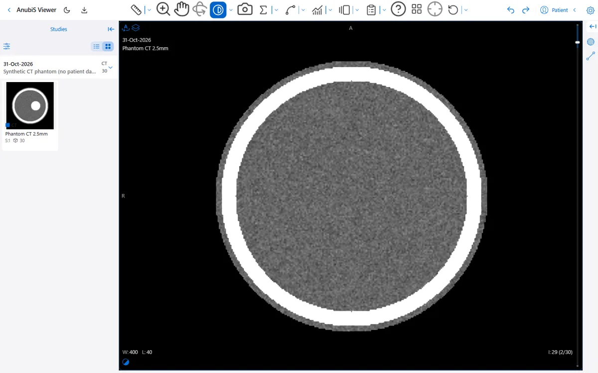
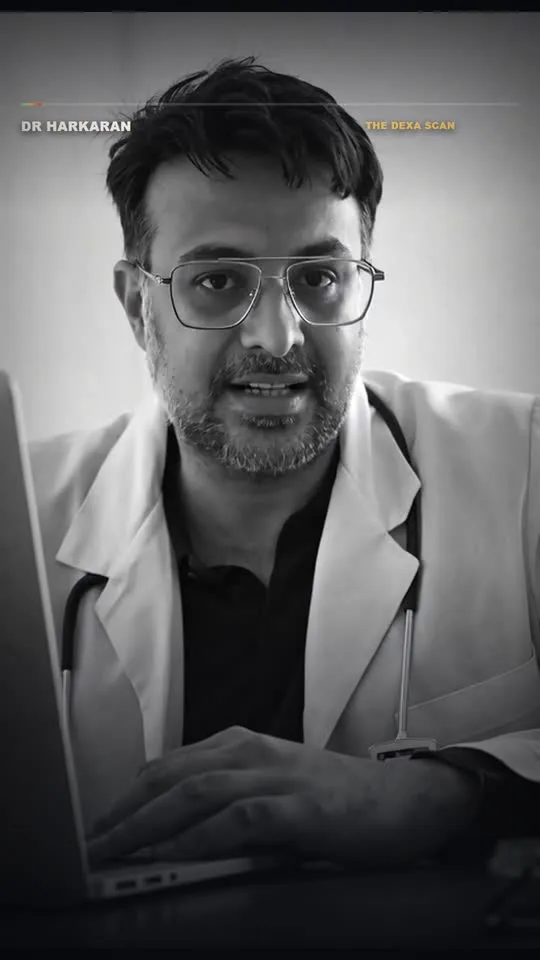
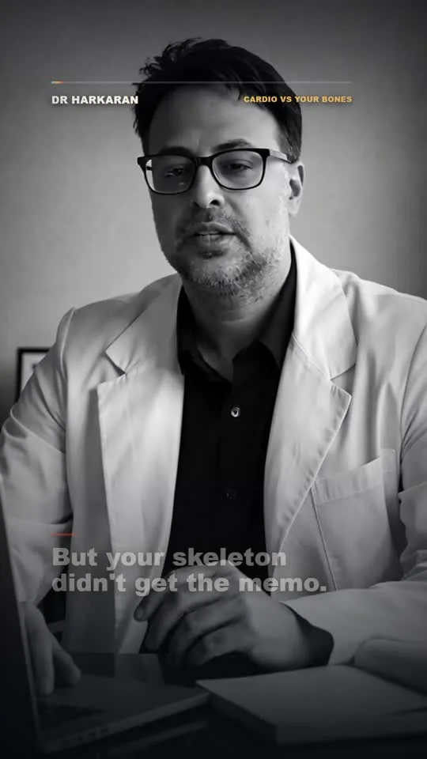
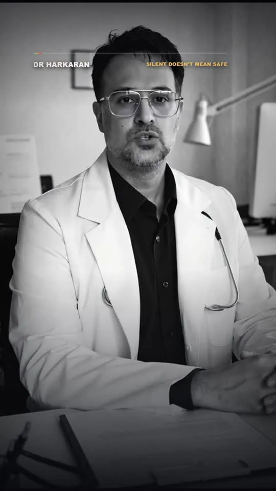
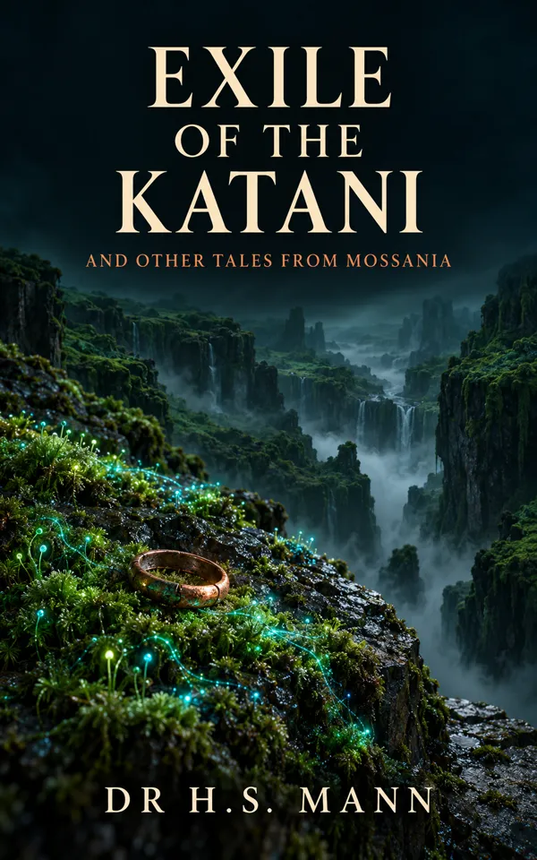
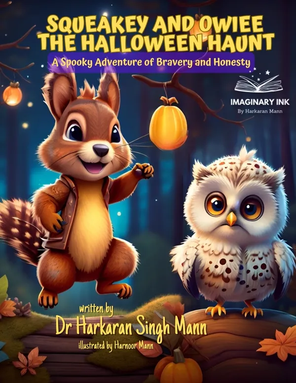
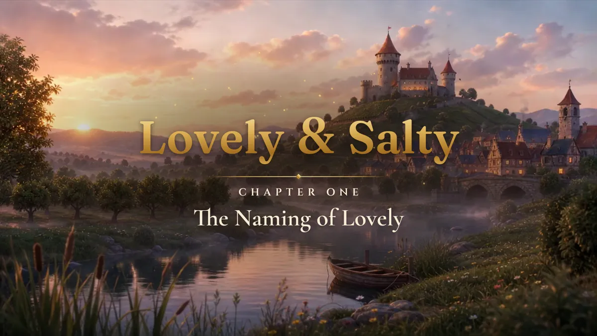
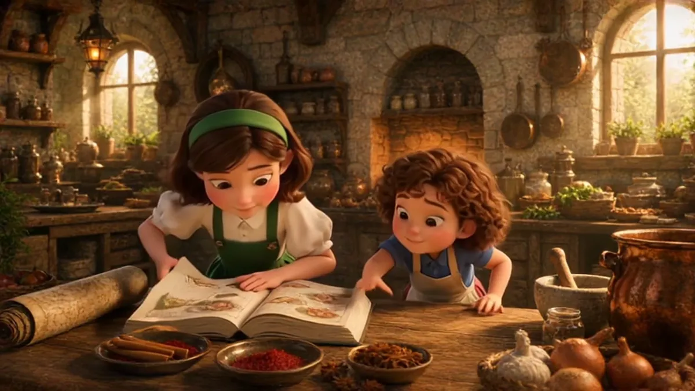

FibroAI
AI-assisted elastography reporting in 10 languages. Structured PDF reports with clinician-led review. Live in production.
Visit fibroai.com →I read scans for a living and build the software I wish I had at the reporting desk: elastography AI, voice-first reporting, foetal biometry, DICOM viewing and health-education video.
Real screens from the running software. Anything touching patients stays behind a login, so no patient data appears here.
AI-assisted elastography reporting in 10 languages. Structured PDF reports with clinician-led review. Live in production.
Visit fibroai.com →
Voice-first reporting: Whisper dictation into a findings pad, rule-based section mapping, a cloud second opinion and an offline FAISS path for templates. Role-based access.

Ultrasound biometry entry, INTERGROWTH-21st growth charts, risk assessment, DICOM/machine import and PDF reports.

Web DICOM viewing for the centre: OHIF / Cornerstone3D with an Orthanc DICOMweb archive, plus a GPU-side AI enhancement worker. Screenshot shows a synthetic phantom; the live archive is staff-only behind Cloudflare Access.
Mann Scanning Centre →
Risk-first position sizing, stop-loss rules and an opening-range scanner for NSE. Paper simulation only: no live broker, no real funds, not investment advice.

An agentic video-production system: pipeline definitions, tool adapters and a Remotion composer that turn a brief into a finished video.
A cloned voice, a talking-head pipeline and a Remotion card engine produce evidence-led reels on bone density, blood pressure, coffee and the liver, and more.



General health education, not medical advice. It does not replace an examination or advice from your own doctor.
The creative work I make outside the reporting room, written as Dr H.S. Mann.


All titles: Amazon author page · Goodreads. Also by Dr H.S. Mann: CVC Critters, Furry Phonics Fun, Squeakey and Owiee: Guardians of the Forest. Second editions of Andromeda's Last Light and The Chef's Daughters are in production; links point to the current editions.


A chapter-by-chapter AI-assisted animated adaptation of the story, finished with upscaling, titles and a sound pass. Not released yet: watch links will appear here.
Original kids' songs set to animated shorts, from planets to farms to sleepy dinosaurs. Watch the full channel on YouTube.
I am a consultant radiologist (M.D. Radiodiagnosis) at Mann Scanning Centre, an NABH-accredited imaging centre in Jalandhar. The tools above start as friction at the reporting desk and end up as software others can use.
Private advisory sessions, by telephone or online, for healthcare organisations, founders and technology teams. Engagements are scoped to your requirement and arranged by email.
Architecture and product guidance for clinical tools, reporting workflows, DICOM and PACS integration, and the selection of AI systems for diagnostic practice.
Technology, workflow and accreditation decisions for establishing and operating a diagnostic centre, advised from an owner-operator's perspective.
Evidence-led content strategy and AI-assisted video production for clinicians and healthcare brands.
Advisory services are non-clinical. No diagnosis, treatment advice or second opinions on patients or scans.
For collaborations and projects. For scans and appointments, please use the centre's site.